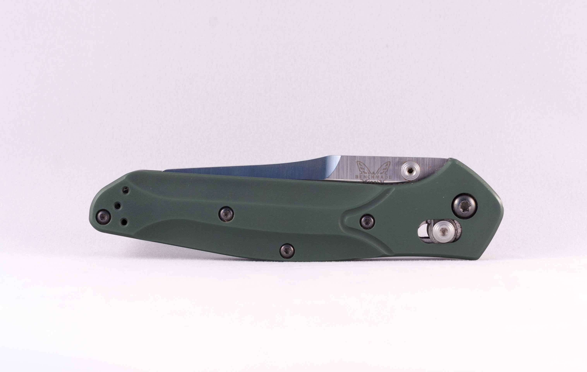

Benchmade 940

Highly regarded as one of the most quintessential EDCs of all time, the 940 is slim, stylish and after over a decade have performed in just about any situation imaginable.
- Designer: Warren Osborne
- Mechanism: AXIS®
- Action: Manual-opening
- Blade Length: 3.40" (8.64cm)
- Blade Thickness: 0.115" (2.92mm)
- Open Length: 7.87" (19.99cm)
- Closed Length: 4.47" (11.35cm)
- Aluminum Handles
- Blade Steel: CPM-S30V (58-60 HRC)
- Handle Thickness: 0.41" (10.41mm)
- Weight: 2.90oz. (82.21g)
Product ID: bm940
*Information courtesy of Benchmade.